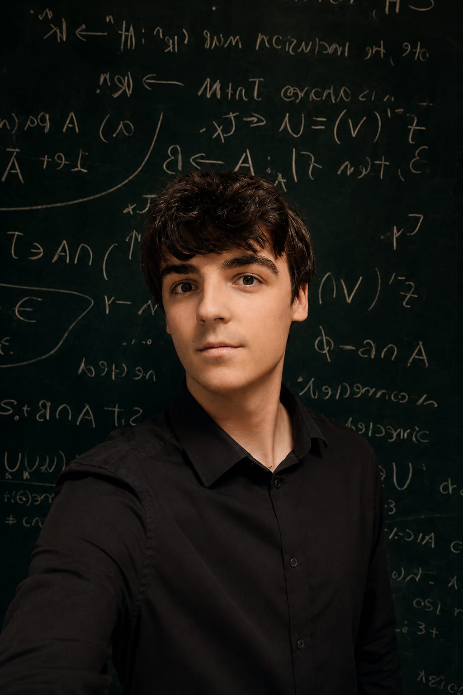

Hello, I'm Noah.
Physicist, researcher, and aspiring theorist — pursuing fusion energy through mathematical physics.
Physicist, researcher, and aspiring theorist — pursuing fusion energy through mathematical physics.

I am a recent graduate of Constructor University (CUB) in Bremen, Germany, where I completed a double major in Physics and Data Science with additional specialization in Mathematics. I graduated at the top of my cohort with a final grade of 1.06, reflecting sustained academic excellence across theoretical and applied physics, mathematics, and computational science.
My academic training has been complemented by research and leadership experience across multiple domains. I have conducted research in molecular dynamics and nanophotonics, served as a teaching assistant for three high-enrollment courses (200+ students), and acted as Physics major representative at CUB. In parallel, I developed leadership experience as president of the Constructor University Rowing Team.
In the summer of 2025, I conducted research at the Arctic University of Norway (UiT Tromsø) in the field of nanophotonics, independently developing an automation pipeline for an optical tweezing–coupled Raman spectroscopy system. I further designed a novel dynamics-based nanoparticle morphotype classification framework — the basis of a forthcoming first-author publication in the Journal of Nanoparticle Research.
I am now preparing to pursue the MSc in Mathematical and Theoretical Physics at the University of Oxford, aiming to build the rigorous foundation in nonlinear systems, field theory, and statistical physics necessary to contribute to nuclear fusion research — one of the most consequential scientific challenges of our time.
Developed an autonomous automation pipeline for optical tweezing–coupled Raman spectroscopy. Designed a novel dynamics-based nanoparticle morphotype classification pipeline. Forthcoming first-author publication in Journal of Nanoparticle Research.
Served as TA for five courses across Physics and Mathematics (300+ students), including Matrix Algebra & Advanced Calculus II, Statistical Physics, Scientific Data Analysis, Electrodynamics & Relativity. Produced comprehensive lecture slides and course materials now used by the department.
Conducted undergraduate research in Molecular Dynamics under faculty supervision, applying computational physics methods to simulate molecular systems and analyze emergent behaviour. Developed the basis for bachelor's thesis work on non-Markovian electrolyte transport.
Led the university rowing team as president, managing operations, organising training schedules, and representing the club at university-level governance bodies.
Elected representative for the CUB Physics program, advocating for student interests in curriculum planning and departmental discussions, liaising between students and faculty.
Graduated as class valedictorian with an IB score of 44/45, placing among the top percentile of IB candidates worldwide. Studied in Sofia, Bulgaria during formative years.
Preparing to pursue the MSc in Mathematical and Theoretical Physics at Oxford, building rigorous foundations in nonlinear systems, field theory, and plasma physics — with long-term focus on nuclear fusion research.
Non-Markovian Mesoscopic Dynamics of DC Electromagnetized Aqueous Electrolytic Solutions — A unified theoretical and computational framework for nonequilibrium transport of electromagnetized electrolytic fluids. Derives kinetic and hydrodynamic transport descriptions via Mori–Zwanzig projection, Klimontovich coarse-graining, and Volterra integro-differential systems. Verified against momentum-conserving molecular dynamics (OpenMM). A foundational step toward the magnetohydrodynamic expertise required for plasma physics and fusion energy research.
Autonomous Computer Vision + Python pipeline for complete automation of optical tweezing–coupled Raman spectroscopy at UiT, Arctic University of Tromsø. Further enables efficient in vitro diffusion-based kinematic morphotype classification of extracellular vesicles and liposomes.
Comprehensive lecture slides produced as TA for 200+ students. Covers linear algebra, eigenvalue methods, multivariable calculus, and more.